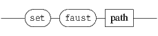

interactMsg 
Interaction messages are user defined messages associated to events and triggered when these events occur. These messages accept variables as message arguments.
Events are typical user interface events (mouse or touch events), extended in the time domain and to specific objects or engine properties. Starting from INScore version 1.20, the modification of any object attribute may be viewed as an event and user defined events have also been introduced (see section 16.2 p.166 for more details).
The general form of the message to watch an event is the following:
what represents the event to watch and message is a list of associated messages, separated by a comma. Colon is also supported as separator (to avoid issues with comma in Max).
NOTE
The [1] and [2] form has no effect with the watch+ message.
In some environments, the comma has a special meaning, making tricky to use it as a message separator. This is
why ’:’ is also accepted as separator in OSC messages.
The get watch message gives all the watch messages of a node, but doesn’t take any argument.

The associated messages are any valid OSC message (not restricted to the INScore message set), with an extended address scheme, supporting IP addresses or host names and udp port number to be specified as OSC addresses prefix. The message parameters are any valid OSC type or variable (see section 16.5).

EXAMPLE
An extended address to send messages to localhost on port 12000:
Internal events are triggered by the user interaction (mouse or touch events) or by the engine internal functionning.
User interface events are typical mouse events:

EXAMPLE
Triggering a message on mouse down:
the object hides itself on mouse click.
Triggering a message on mouse down but addressed to another host on udp port 12100:
NOTE
UI events are not supported by objects that are synchronized as slave.
Mouse events can be simulated using a event message:

where mouseEvent is one of the events described above, x and y are integer values giving the click position, expressed in pixels and relative to the target object.
EXAMPLE
Simulating a mouse down at position 10, 10 :
Depending on the display device, multi-touch events are supported by INScore :

A typical sequence of generated events consists in a touchBegin event, followed by touchUpdate events and closed by a touchEnd.
Events are also defined on the time domain:

Each event takes a time interval as parameter, defined by two time specifications (see section 3 p.32 for the time format)
EXAMPLE
An object that moves a score to a given page number when it enters its time zone.
url objects (i.e. intermediate objects for URL based objects (see section 5.8 p.47) support specific events, intended to reflect the transaction state:

EXAMPLE
Triggering an error message in case of failure :


EXAMPLE
Displaying a welcome message to new elements:
Attribute based events includes the whole set of messages that are supported by an object: x, y, color, etc. but also type specific messages. These events are triggered when a message has been succesfully processed. However, you shouldn’t assume that the attribute value has been changed: when a message sets an attribute to it’s current value, it is succesully processed and the corresponding event - if any - is triggered.
EXAMPLE
Watching an object x coordinate change:
NOTE
Watching the newData event is equivalent to watch the set attribute. However, the newData event is triggered only
when the object state is changed.
WARNING
With the event’s generalisation to any object attribute, a one tick delay has been introduced to all events.
Thus the associated messages are not processed synchronously to the event but posted to be processed
by the next time task. This delay has been introduced to avoid freezing the system in case of loops.
However, it introduces also a pitfall in interaction design, when message based variables are used
(see section 16.5.5 p.172): message based variables are evaluated at the event time while messages
are processed by the next time task, thus the following messages won’t produce the expected result:
actually, when the $(/ITL/scene/A get x) variable is evaluated, the preceding message that sets the x attribute of A has not been aready processed. One workaround consists in splitting the interaction in several parts, making sure that the messages are processed e.g.
INScore events supports user defined events. The name of user defined events must start with a capital letter and be composed of capital letters and/or numbers. Other characters are reserved for INScore use.
Messages attached to user defined events accept regular variables (although the position variables are useless), but they accept also any number of a variables which names are $1, ... $i and which values are taken from the event call arguments (see section 16.5.6 p.173).
User defined events can only be triggered using the event message (see section 16.4 p.168).
EXAMPLE
Watching and triggering a user defined event:
Defining high level abstractions:
The event message may be used to triggered events. It’s the only way to trigger user defined events. It may be used also to simulate user interface events (like mouse events).
NOTE
Time events are excluded from the event message supported events: to trigger a time event, you can use a date
message.
Variables are values computed when an event is triggered. These values are send in place of the variable. A variable name starts with a ’$’ sign.
Position variables reflects the current mouse position for mouse events or the current touch position for touch events. For attribute based events, the x and y variables are set to the target object current position and the other variables are undefined. For other events, the position variables are set to 0.
EXAMPLE
An object that follows mouse move.
Sensors values are available using the $x, $y and $z variables, for events generated in the context of a sensor.
Note that depending on the sensor type, the $y and $z variables may be useless.
Time variables reflects the date corresponding to the current mouse position for mouse events. For attribute based events, the time variables are set to the target object current time position. They are set to 0 for the other events.

NOTE
A variable can be used several times in a message, but several $date variables must always refer to the same
mapping.
EXAMPLE
Sending the current date as a float value to an external application:
NOTE
For the newElement event, the target object is the new element.
EXAMPLE
Using an object name:
A message based variable is a variable containing an OSC message which will be evaluated at the time of the event. They are supported by all kind of events. Like the variables above, a message based variable starts with a ’$’ sign followed by a valid ’get’ message enclosed in parenthesis:
The evaluation of a ’get’ message produces a message or a list of messages. The message based variable will be replaced by the parameters of the messages resulting from the evaluation of the ’get’ message. Note that all the ’get’ messages attached to an event are evaluated at the same time.
EXAMPLE
An object that takes the x position of another object on mouse down:
Messages associated to user defined events accept any number of a variables which names are $1, ... $i and which values are taken from the event call arguments. These events may be viewed as functions with arbitrary parameters; however parameters count and type is not checked: arguments in excess are ignored and variables without corresponding argument (e.g. $3 when only 2 arguments are available) are left unexpanded.
The OSC address of a message associated to an event supports the following variables:
EXAMPLE
Requesting a set of objects to send a message to themselves on a mouse event:
For a given object, its interaction state (i.e. the watched events and the associated messages) can be saved and restored.
Interaction states are managed using a stack where the states are pushed to or popped from.
The different states stored in this stack can be obtain with the message :
NOTE
The effect of a pop message addressed to an object with an empty stack is to clear the object current interaction
state.
The fileWatcher is a static node of a scene that is intended to watch file modifications.
It receives messages at the address /ITL/scene/fileWatcher.
The fileWatcher support the watch and watch+ messages as described in section 16 p.159 with a file name used in place of the what parameter.
EXAMPLE
Reload aa INScore script on file modification: